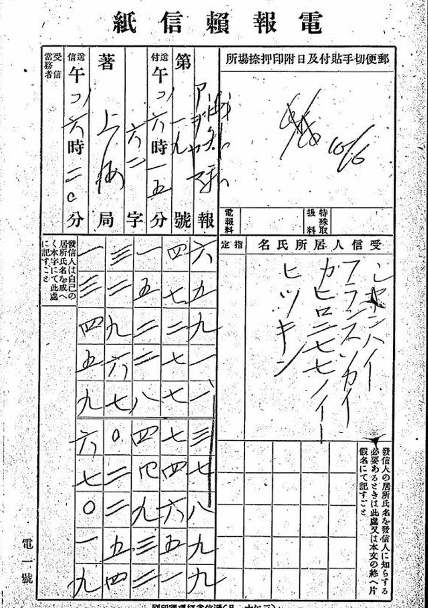

At a glanceCiphertext-only recovery · partial · 1,940 of 2,100 groups
- The telegrams
- 27 cipher telegrams of 3 June to 2 July 1916, most dated 8–16 June, between Huang Xing and Zhang Xiaozhun in Tokyo and the Shanghai group (Yin Ruli, Huang Fu, Ge Jing’en), Governor Lü Gongwang of Zhejiang and the Hunanese group. Five more in the same files are in clear.
- Where
- Diplomatic Archives of the Ministry of Foreign Affairs of Japan, via JACAR: B03050089200–B03050089500 and vol. 4, B03050089900 and B03050090000. Telegraph-office forms copied by the police.
- The cipher
- Chinese telegraph code numbers in four-digit groups, disguised by three keys. A clear prefix on each form names the code book: 0364 1378 = 共密, 1369 1378 = 容密, 6591 1378 = 辰密.
- How it was solved
- Key searches scored with a telegraph-code language model, no cribs. Each key reads telegrams that were not used to find it, and the day codes at the end agree with the dates on the forms.
- Credit
- Brice Dudout, with Claude (mainly Opus 5.5): digits re-read on the scans, the three keys, translations and context. His pages: 共密, 容密, 辰密, June 1916. Cross-posted with his agreement. This project checked his keys with its own decoder.
- What it says
- Japanese arms for Zhejiang; Japan’s refusal to lend to Beijing before North and South are unified; Huang Xing’s conditions for Li Yuanhong, beginning with the 1912 Constitution.
- Still open
- 154 doubtful and 6 illegible characters; 18 of the 22 sheets of the longest telegram not yet re-read blind; five short telegrams in other books (和密, 乾密, no prefix) or not reading under the 共密 key.
01 The forms
When Yuan Shikai died on 6 June 1916, Huang Xing was in Tokyo, living at Aoyama Minami-machi 3-53, and his allies were in Shanghai. The Japanese police copied the telegrams that passed between them onto the telegraph office’s own forms, and the copies survive in a Foreign Ministry series of mail and telegrams of watched persons. Each form holds a grid of digits written as kanji numerals. Brice Dudout reads the grid in columns, right to left, each column from the top, and cuts the stream into four-digit groups.

The first two groups are in clear and name the code. Hsueh Chun-tu’s edition of Huang Xing’s 1916 drafts notes a code name at the head of each telegram, one per correspondent. On that evidence, 共密, 容密 and 辰密 are code books issued to particular correspondents, and each needed its own key.
| code | telegrams | groups | without doubt | doubtful | illegible |
|---|---|---|---|---|---|
| 共密 | 9 | 555 | 510 | 45 | — |
| 容密 | 14 | 1,306 | 1,198 | 102 | 6 |
| 辰密 | 4 | 239 | 232 | 7 | — |
Counts from Brice Dudout’s email of 19 October 2026; the group totals were measured here on his digit file.
02 The 共密 key
Swap the tens digit through a fixed table, then subtract the group from 9000. The tens table is
| tens written | 0 | 1 | 2 | 3 | 4 | 5 | 6 | 7 | 8 | 9 |
|---|---|---|---|---|---|---|---|---|---|---|
| tens meant | 9 | 7 | 6 | 1 | 4 | 0 | 5 | 2 | 8 | 3 |
Example. N17 opens 1188 4080 4113 7528. In 1188 the tens digit 8 stays 8, and 9000 − 1188 = 7812, 黎. In 7528 the tens 2 becomes 6, giving 7568, and 9000 − 7568 = 1432, 就. The four groups give 黎總統就, “President Li has taken [office]”. N17 ends 3887 3739 5550, 聞興灰: “for your information. Xing. The 10th.”
The key was found by trying every constant from 0000 to 9999 and, for each, choosing the best tens table exactly, scored by a model of telegraph-code pairs trained on telegrams of 1915–16. Only 9000 and this table give Chinese.
03 The 容密 key
Each digit is replaced according to its place, and 0901 is added with ordinary carrying:
| digit | 0 | 1 | 2 | 3 | 4 | 5 | 6 | 7 | 8 | 9 |
|---|---|---|---|---|---|---|---|---|---|---|
| thousands | 0 | 1 | 2 | 3 | 4 | 5 | 6 | 7 | 9 | 0 |
| hundreds | 0 | 1 | 2 | 3 | 4 | 5 | 6 | 7 | 8 | 9 |
| tens | 0 | 1 | 9 | 8 | 2 | 7 | 6 | 5 | 4 | 3 |
| units | 9 | 8 | 0 | 1 | 7 | 2 | 3 | 4 | 5 | 6 |
Example. 2081: the thousands 2 and hundreds 0 stay, the tens 8 becomes 4, the units 1 becomes 8, giving 2048; 2048 + 0901 = 2949, 款, “funds”. No group in the corpus begins with 00: the encipherer wrote 90 instead, which is why the thousands 9 stands for 0. So 9084 becomes 0047, and 0047 + 0901 = 0948, 國.
The first sheets alone, ninety groups, were too few. Once about 590 groups from the continuation sheets were in hand, annealing four digit tables gave readable text. The addition showed itself through one word: 借款, “loan”, sometimes came out 借甸, a thousand too high, exactly when no carry came up from the hundreds. The exact key was computed on four telegrams (N02, N08, N11, N12). The other ten decode with it unchanged, among them N14, which ends 佳, the day code for the 9th, the date on its form.
04 The 辰密 key
This one adds nothing: it is the telegraph code itself, reordered. The code is laid out in pages of a hundred characters. In 辰密 the first two digits give the page, counted backwards over the numbers that contain no zero: 99 is page 00, 98 page 01, down to 91 = page 08, then 89 = page 09 (90 is skipped), and so on to 11 = page 80. The tens and units are permuted:
| digit | 0 | 1 | 2 | 3 | 4 | 5 | 6 | 7 | 8 | 9 |
|---|---|---|---|---|---|---|---|---|---|---|
| tens | 3 | 9 | 8 | 7 | 1 | 0 | 2 | 6 | 4 | 5 |
| units | 1 | 9 | 5 | 4 | 3 | 2 | 6 | 7 | 8 | 10 |
Example. 9950 4220 6219. In 9950, page 99 is 00, tens 5 is 0, units 0 is 1: 0001, 一. In 4220, page 42 is 52, tens 2 is 8, units 0 is 1: 5281, 興 (Huang Xing’s signature). In 6219, page 62 is 34, tens 1 is 9, and units 9 counts as 10, carrying into the tens: 3400 + 90 + 10 = 3500, 灰, the day code for the 10th.
No 辰密 telegram had a known plaintext, and the other two keys did not fit. Two features pointed to a reordered book: no 0 in the first two places, and a quarter of the text on three “pages” (99, 96, 93). Annealing a model with permuted pages, tens and units on three telegrams (201 groups) gave readable text. The page table it found followed the zero-free countdown, which was then imposed. Two wrong characters, 劈 for 力 and 滠 for 灰, both from groups ending in 9, gave the rule that 9 stands for 10.
05 The checks
His checks. Each key also decodes telegrams that were not used to find it. The 容密 key, computed on four telegrams, decodes the other ten without refitting; refitted on all of them it returns the same tables. 辰密 N05 was left out of the search and has no prefix, yet it decodes straight through. N16 ends with 灰, the 10th, the date on its header. Three telegrams from vol. 4 (V4B, V4D, V4E) were found after the keys and decode with them unchanged. The names that come out belong to people holding the right offices in June 1916: Zhang Guogan, Gu Zhongxiu, Zhao Hengti, Tang Xiangming, Tang Hualong. Every digit was re-read blind on the scans by Brice Dudout, without seeing the decipherment. The exception is the longest 容密 telegram, V4B, where only 4 of 22 sheets have been re-read so far.
The check made here (20 October 2026).
- His
verify.pyreproduces all 32 published raw texts (27 cipher telegrams and 5 in clear) from his digits. It scores each key’s text with his language model against 200 random keys of the same form and 200 shufflings of the digits. The real keys score 3.49 (共密), 3.18 (容密) and 3.77 (辰密); the best random key reaches −1.45, −1.67 and −1.59, and the best shuffle −1.22, −1.46 and −1.18. - His 共密 search, rerun from scratch, finds 9000 and the tens table exactly. His 容密 search finds the hundreds and tens tables exactly and the units up to one carry, but not the 90-for-00 rule; he describes that last step as made by hand.
- A decoder written here from the three key statements alone (
targets/numeric1916/decode.py), using the Unihan telegraph-code table already in this repository, was applied to his digit streams. All 2,100 cipher groups give the same character as his published raw texts (555 of 555, 1,306 of 1,306, 239 of 239), and so do the 372 clear groups.
This confirms that the keys as stated turn his digits into his texts, and that his controls behave as he reports. It does not re-read the scans. Only the first dozen digits of the N16 form shown above were compared by eye, and they match.
06 What they say
Brice Dudout’s article sets the telegrams in their history. Hsueh Chun-tu’s edition of Huang Xing’s 1916 drafts has nothing between the pieces of 8 and 20 June, and these telegrams are mostly dated in between. Translations below are his, shortened.
Arms and loans (容密)
On 9 June Huang Xing wires Governor Lü Gongwang of Zhejiang, through Shanghai (N14):
轉呂都督鑒：袁死，大局益艱，非切實預備，不足以申張國法、奠定國基。感佩藎籌，當効棉力。械先運，款百萬亦可卽成。興佳
“Yuan is dead and the situation is harder; without real preparation we cannot uphold the law of the State. The arms will be shipped first; the loan of one million can also be concluded at once. Xing, the 9th.” Zhang Xiaozhun’s telegrams give the order: about ten thousand rifles, ten or so mountain guns, machine guns (N02, N12). Lü asks for exact models and rounds per weapon (N21), offers Zhejiang’s tobacco taxes as security (N25), and promises payment before 30 June (N36).
Japan and the Constitution (共密, 容密)
On 10 June Huang Xing sets out five demands to put to Li Yuanhong (N17): restore the old Provisional Constitution and Parliament, issue no amnesty, have Duan Qirui’s cabinet resign, move Wang Zhanyuan, bring the party leaders to Beijing. He adds:
再，日當局決定：非南{北}統一，〔廖〕不借款於北京政府。
“Moreover, the Japanese authorities have decided not to lend to the Beijing government until South and North are unified.” Braces mark a conjectured character, square brackets one that reads but does not fit. The next day (N19b) he warns that “a legal solution, without sufficient armed force behind it, will have no effect”, and asks that Zhejiang be “the pillar of the South-East”. From Shanghai, Yin Ruli, Ge Jing’en and Huang Fu report the meeting at Tang’s house: Tang Shaoyi and Tang Hualong will not go to Beijing until Yuan’s laws are annulled and the 1912 Constitution is restored (N24). Li Yuanhong’s reply to Huang Xing of 14 June is in the same file, in clear (N34).
A division for Li (辰密)
On 10 June Zhang Xiaozhun asks the Hunanese group to give the new president troops he can rely on (N16, shown above): Zhao Hengti, “always trusted by Li”, then training troops under Governor Tang, should form an elite division at his disposal. The day before, Huang Xing had written that a joint telegram to Li, Cen Chunxuan and the provinces was hard to word, and that “Japan’s attitude is very much wait-and-see” (N13, 日態度頗觀望).
07 What is open
- 154 characters are doubtful (45 共密, 102 容密, 7 辰密) and 6 容密 characters are illegible. Most come from uncertain digits on the police copies. A few codes recur with an unexpected character (繒 for 生, 盻 for 盼); they are marked, not corrected. In 辰密 four characters are probable readings resting on a single digit, and 一不 in N13 is probably a slip for 不一.
- V4B, 265 groups over 22 sheets, has been re-read blind on only 4 sheets. In V4B, V4D and V4E the digit file includes framing repairs (a digit missing or extra) inferred from the decoding, still to be checked on the scans.
- Five short telegrams in the same files have only their first sheet transcribed and no key. N06 is headed 和密 and N09 乾密; N01 and N03 have no prefix; N07 carries the 共密 prefix but does not decode with the 共密 key.
- None of the three keys has been found in a historical code book, and the 1916 edition of the telegraph code is not identified; one printed edition agrees on fourteen entries checked. The texts have not been found in the 黃興集 or in Li Yuanhong’s correspondence, which are still to be searched. The translations are proposals.
08 Sources
- Japan Center for Asian Historical Records (JACAR), Diplomatic Archives of the Ministry of Foreign Affairs of Japan, series 特定人ノ発受郵便物取調: B03050089200, B03050089300, B03050089400, B03050089500, B03050089900, B03050090000.
- Brice Dudout, Wenmi (October 2026, CC BY 4.0): 共密, 容密, 辰密 and “June 1916: what Huang Xing’s telegrams say”; email of 19 October 2026.
- Decoders, digit files and controls: github.com/bdudout/wenmi, solver/numeric1916 (
verify.pyreproduces the 32 raw texts and scores each key against random keys and shuffled digits). - Hsueh Chun-tu (薛君度), ed., 黃興等電稿, Huang Xing’s telegram drafts of May–October 1916, as cited by Brice Dudout.
- Related pages here, each with a different system: Sun Yat-sen’s intercepted telegrams, 1916–17 (code condensers) and Huang Xing to Lin Hu and Li Genyuan, 25 May 1916 (romanised kana).
The digit streams copied from Brice Dudout’s repository (groups.tsv, ct_*.txt), the independent decoder and its output, and the notes are in the repository under targets/numeric1916/. The JACAR scans stay in his repository.